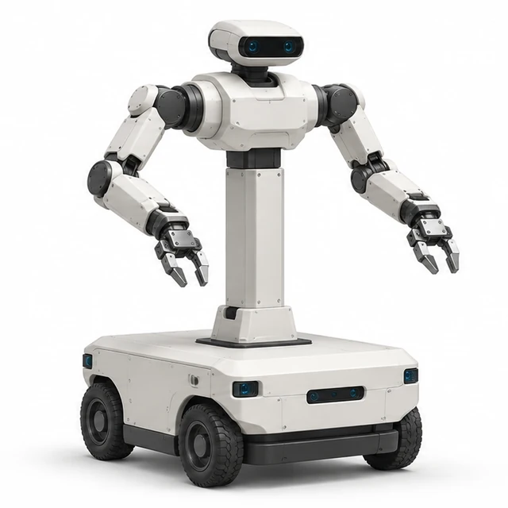
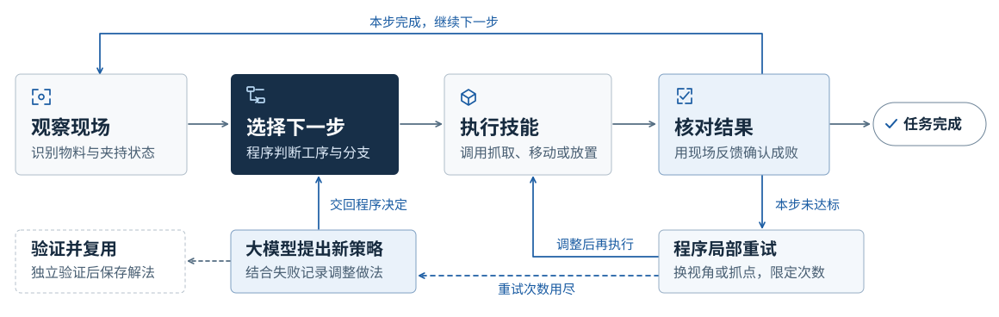
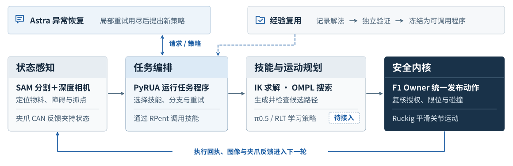
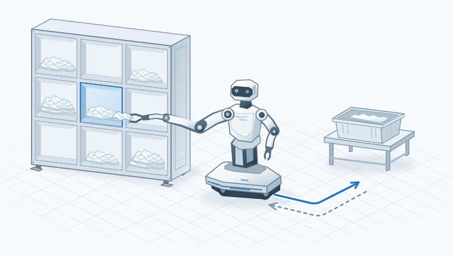

今天，工厂主要依靠示教轨迹和固定工装。随着本体能在工位间移动，选料、抓取和异常恢复可以逐步交给具身系统。
沿示教轨迹上下料，视觉辅助识别来料偏移。

一台轮式机器人往返多个工位，按现场状态选料、换抓点。
面向按人设计的工位，自主衔接移动、操作与现场处置。
路线设想中的近似比例，指具身系统承担的任务环节。100% 为长期全流程覆盖愿景。各阶段均可使用底层运动控制。
Harness 组织机器人完成整项任务。它根据现场反馈决定继续、重试或更换策略，让成熟动作保持可重复。

横向滑动查看全图
定位目标，判断是否还需要操作。
按当前状态选择抓取、移动或放置。
成功则继续下一步，达到目标则结束。
异常恢复 先重新观察、换抓点并限次重试。仍无解时，模型提出新策略，交回程序执行。
感知提供证据，程序选择技能，规划器生成候选路径。机械臂的每次动作都由 F1 控制端检查并发布。

SAM 分割、深度相机和夹爪 CAN 反馈给出位置与夹持状态。
PyRUA 运行任务程序，通过 RPent 调用技能。
IK、OMPL 和扫掠碰撞检查生成关节路径。柔性抓取可接入 π0.5 / RLT，仍待验证。
F1 Owner 检查并发布动作，Ruckig 平滑轨迹。程序结合回执与复观决定下一步。
恢复与复用 Astra 提出策略并交回程序。运行记录经独立验证后，成功程序可冻结复用。
F1 Harness 目标框架说明 · 图中展示目标设计，学习策略为待接入组件。
自研 F1 在料架和放置区之间往返。程序记录每格是否清空，并在每次放置后从上次进度继续。

扫描九格，选有余料的格口，定位外露纸边。
闭爪后小幅回撤，结合夹爪读数与图像确认带出泡沫纸。
底盘移动到放置区，机械臂松爪，确认物料已落入接料箱。
回到原格，有余料就继续取，确认清空后，再处理下一格。